Los preparativos
Llego cuando todavía hay nervios y bata. Se hacen los detalles, el vestido, las manos de tu madre abrochando algo.
Propuesta de diseño preparada por G&G Elcano para Foto Soria Digital. Fotos y datos reales de Álvaro Rodríguez.
Fotografía de bodas · Soria y provincia
Sin poses eternas ni listas de fotos obligatorias. Me muevo por la boda, hago mi trabajo y procuro que casi no se me note. Lo demás son treinta años mirando por el visor en esta provincia.
Álvaro Rodríguez · Soria y El Burgo de Osma · desde 1996
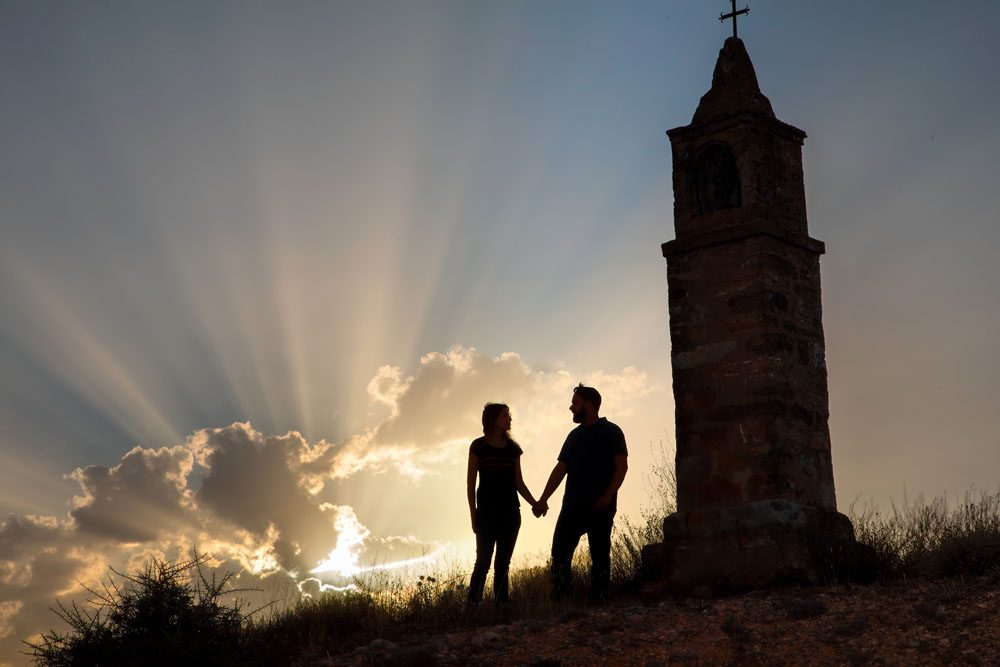
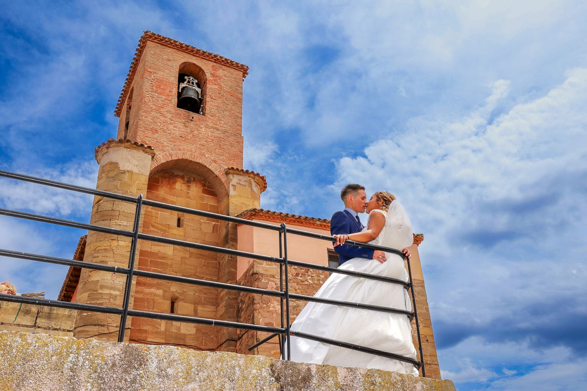
Cómo son mis fotos
Color fiel, composición cuidada y un punto informal. Unas veces trabajo como un periodista, metido donde pasan las cosas. Otras me quedo lejos y no me ve nadie. Algunas fotos llevan retoque avanzado, otras van en blanco y negro o con un aire antiguo. Lo que no hago es encasillar la boda entera en un solo estilo.
Una selección
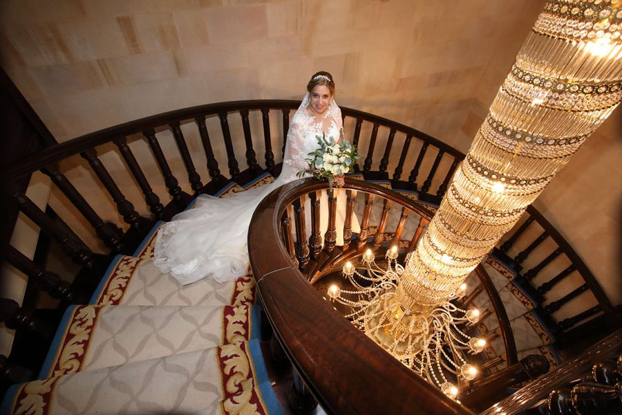
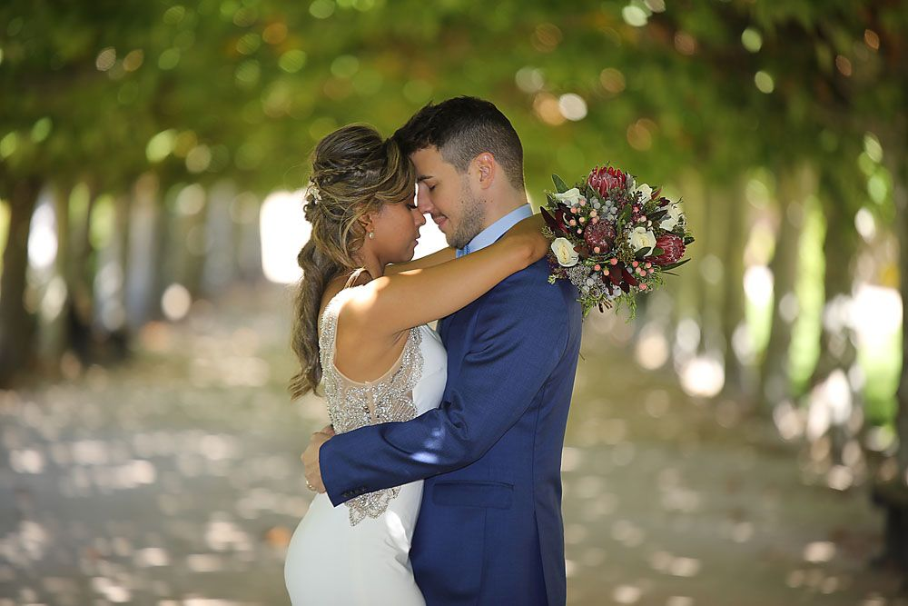
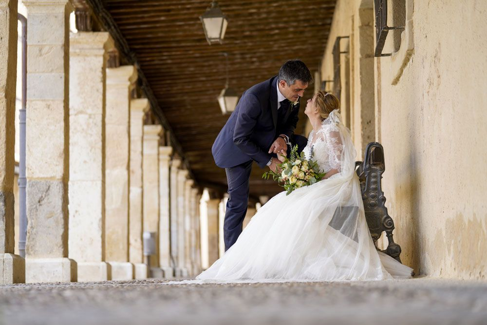
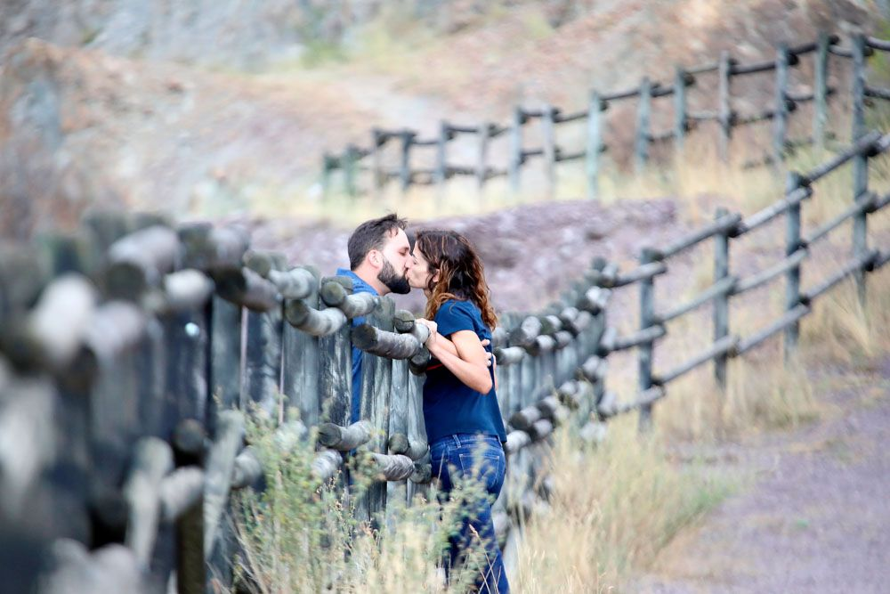
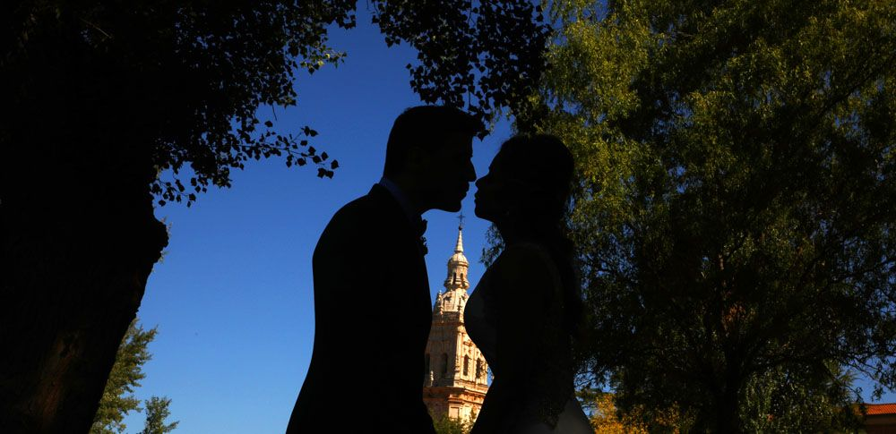
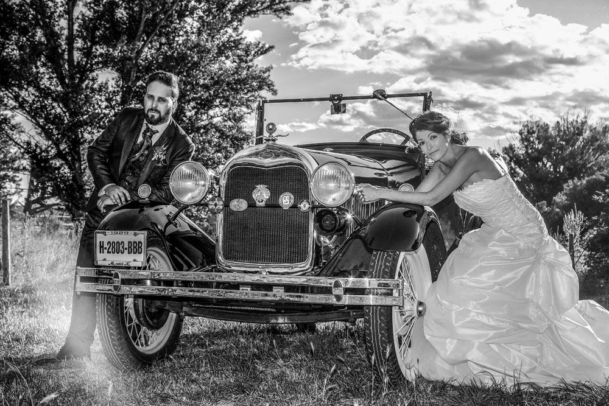
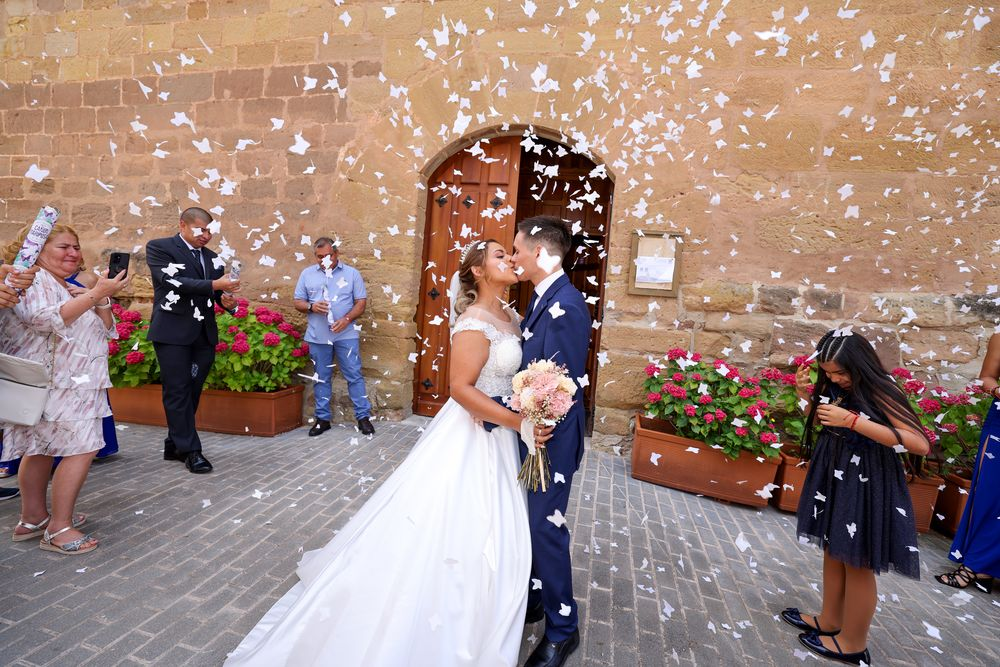
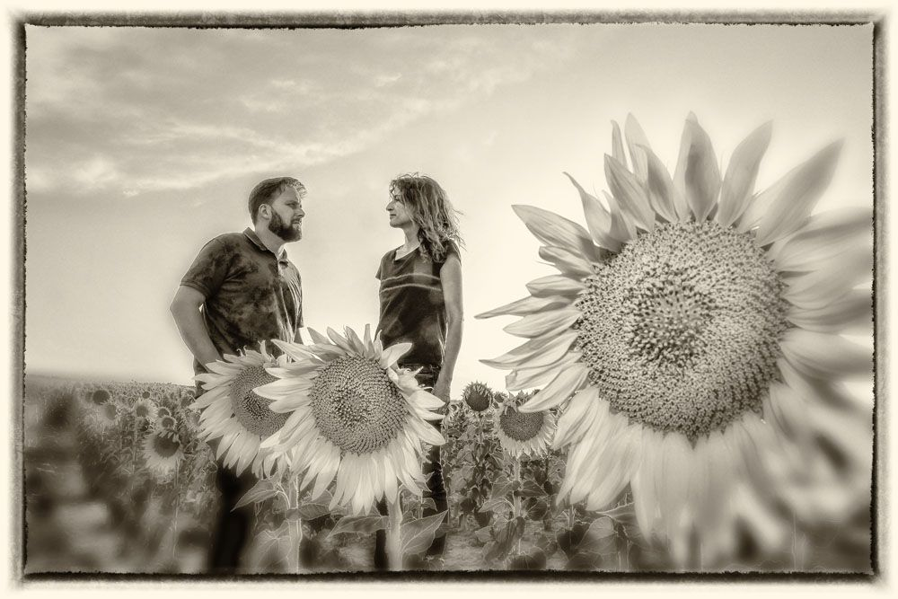
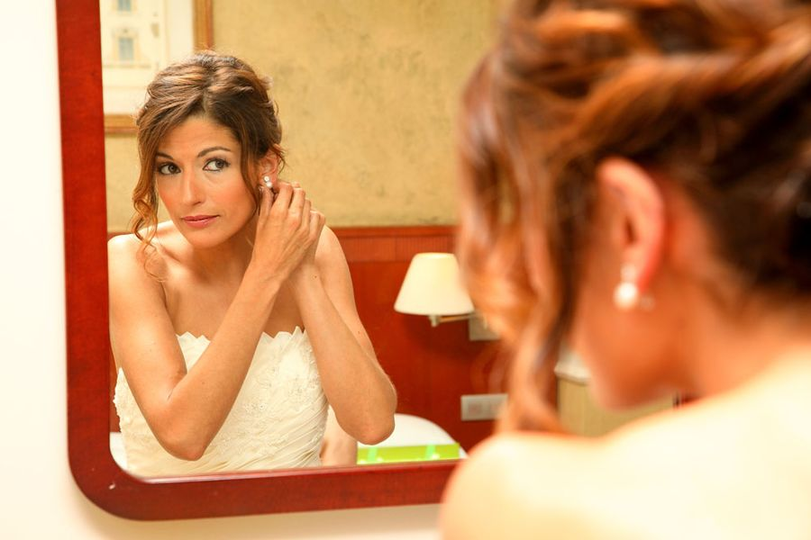
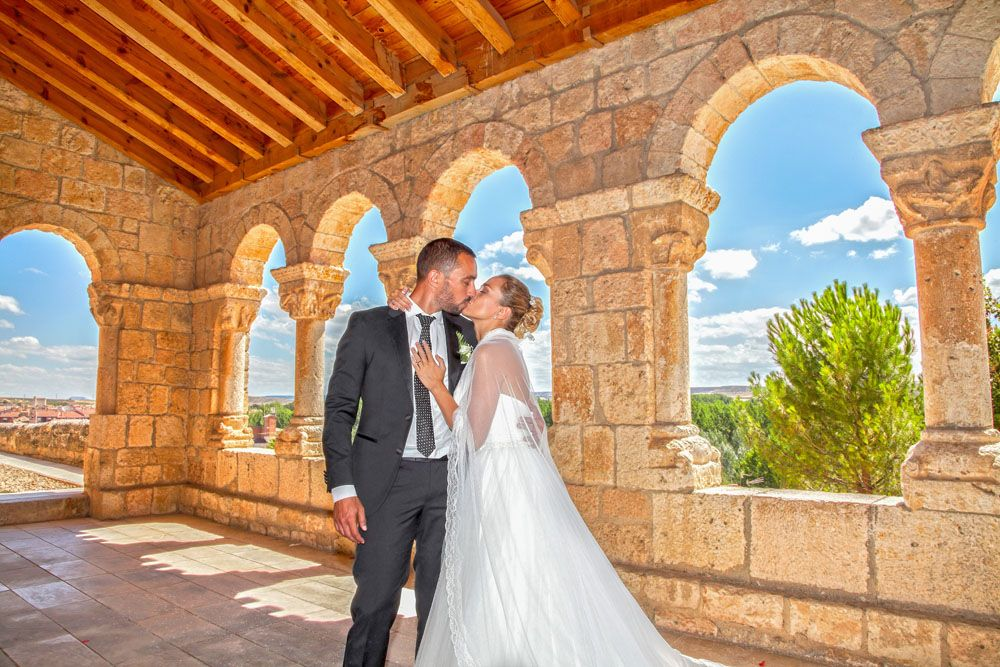
De la mañana al último baile
Llego cuando todavía hay nervios y bata. Se hacen los detalles, el vestido, las manos de tu madre abrochando algo.
Ahí no molesto. Me muevo poco, uso luz natural y objetivos luminosos, y dejo que la ceremonia sea vuestra y no mía.
Las fotos de familia, rápidas y ordenadas, que nadie quiere estar media hora al sol. Después nos vamos los tres a buscar un sitio bonito.
Comida, brindis, el ramo y el baile. Aquí es donde salen las fotos que luego enseñáis, aunque no os deis cuenta en el momento.
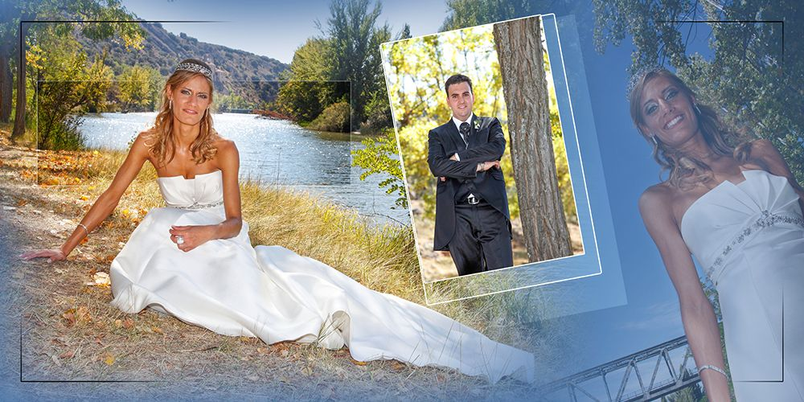
El álbum
Las fotos se colocan una a una hasta que la página cuenta algo. No uso plantillas, y por eso ningún álbum se parece al anterior.
Os lo enseño montado al día siguiente de la boda. Los cambios los hacemos en directo, por WhatsApp o sentados en vuestra casa, viendo las láminas. Cuando decís que sí, va al laboratorio.
Álbumes digitales o analógicos, en materiales muy distintos. También maletín, caja de USB, libro de firmas y árbol de huellas.
Plazos de entrega
Un vídeo corto para pasar por el grupo mientras seguís de fiesta.
Las fotos en la nube, con un enlace privado que compartís con quien queráis.
El álbum maquetado, listo para que lo veáis y digáis qué cambiamos.
Todo cerrado: vídeo largo montado y álbum camino del laboratorio.
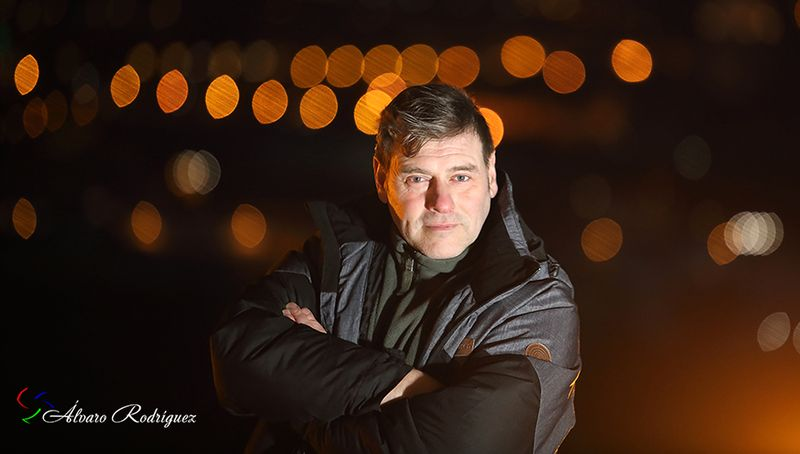
Quién soy
Empecé en 1996 retocando fotos delante del ordenador y acabé detrás de la cámara. Vivo en El Burgo de Osma y trabajo en toda la provincia. He fotografiado bodas, comuniones, fiestas de pueblo y bastantes cosas más de las que pasan por aquí.
También doy cursos de fotografía y hago retoque para otros fotógrafos y para empresas de Soria. Eso, al final, se nota en cómo salen vuestras fotos.
Primer premio de fotografía de Semana Santa en El Burgo de Osma. Tercer premio en San Esteban de Gormaz. Premio de Arte Digital en Valladolid. Accésit de FEPI, profesionales de la imagen. Talleres para la Diputación de Soria.
4,9 sobre 5 en Google, con 27 opiniones
«Impresionantes reportajes, sobre todo en la boda de unos amigos, gran fotógrafo. Lo recomiendo.»
TV Soria
«Gran fotógrafo Álvaro. Profesional que te asesora en todo lo que necesites y se adapta a tus eventos.»
Fernando García
Reservas
Cada boda ocupa un día entero, así que solo puede haber una. Al rellenar esto se abre WhatsApp con el mensaje escrito, y os contesto el mismo día, de 8:00 a 23:00.
O directamente: 645 12 05 19 · fotosoriadigital@gmail.com